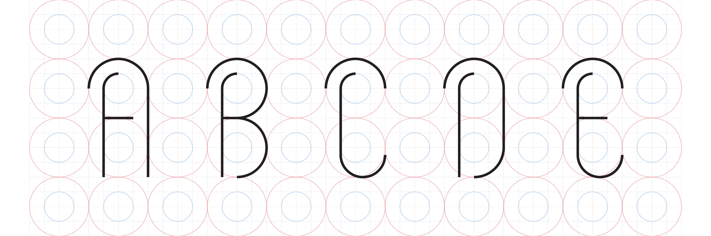
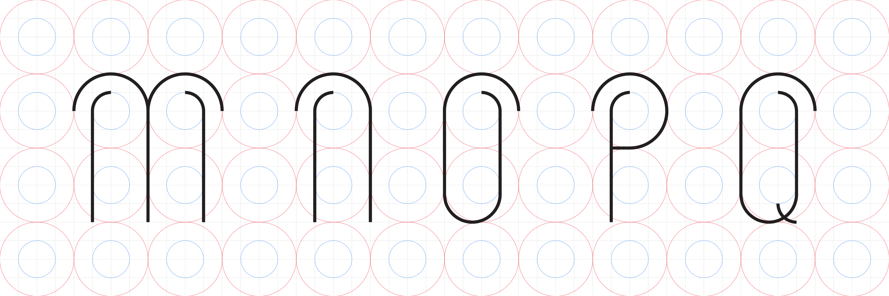
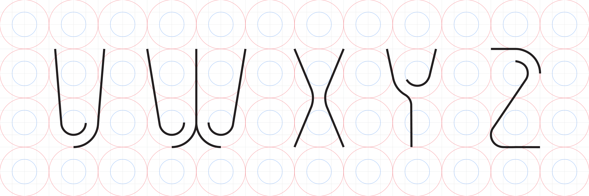
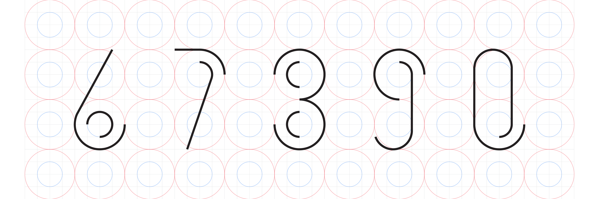
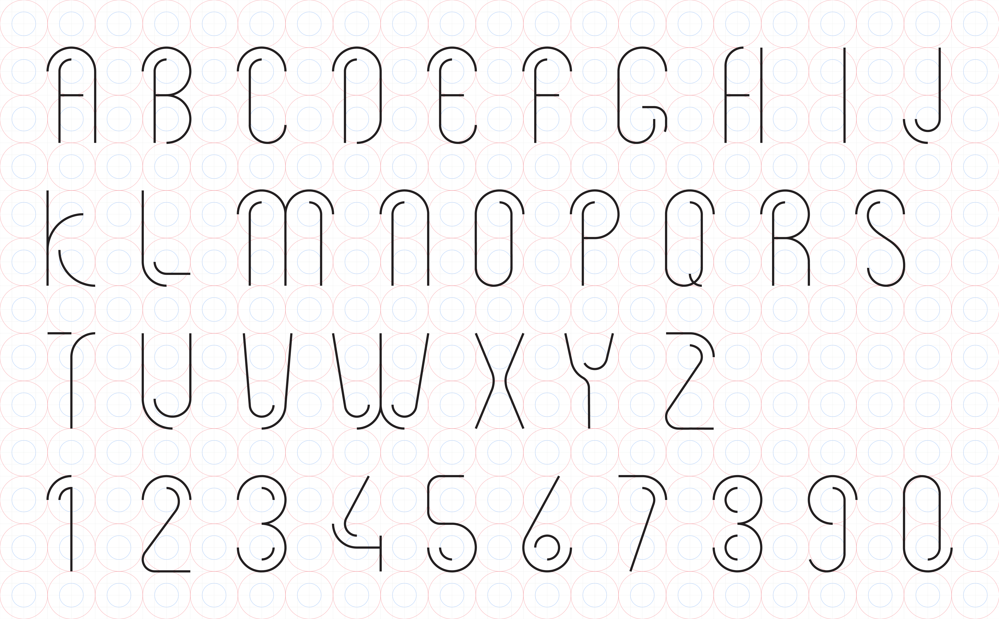
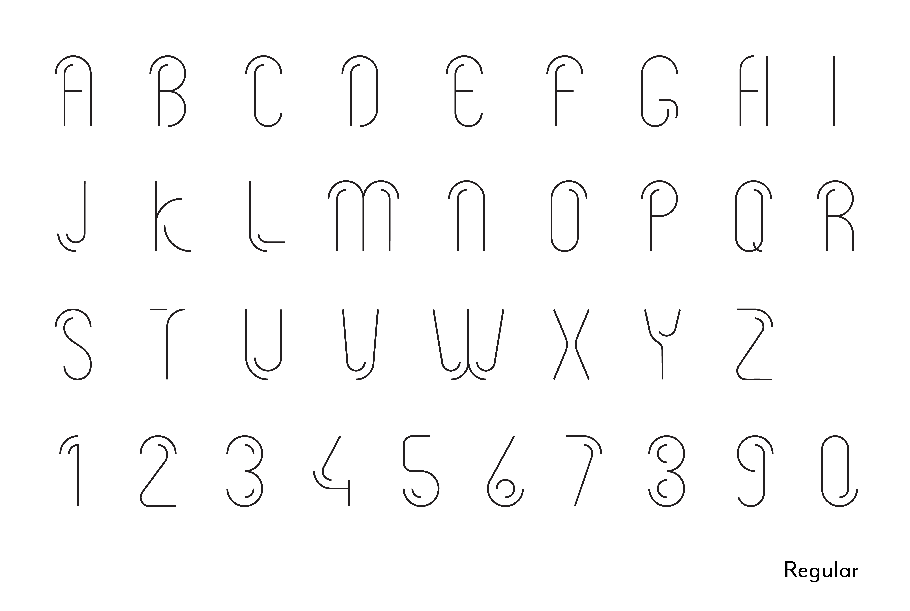
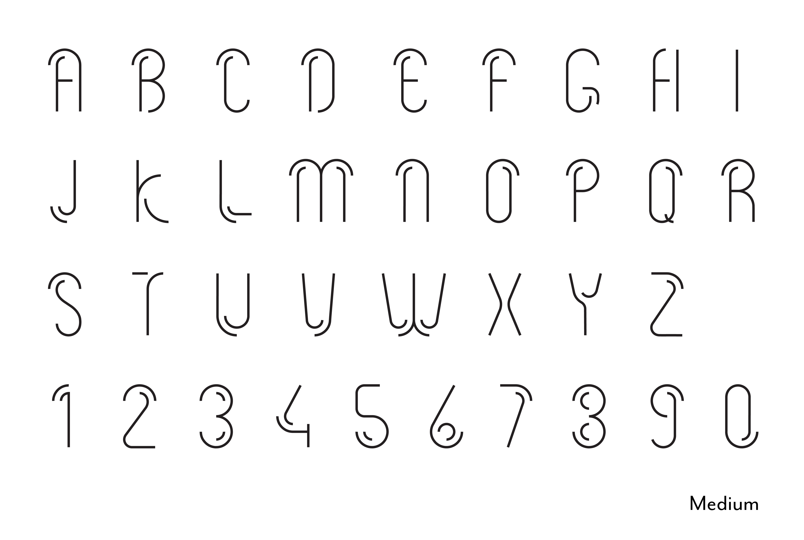
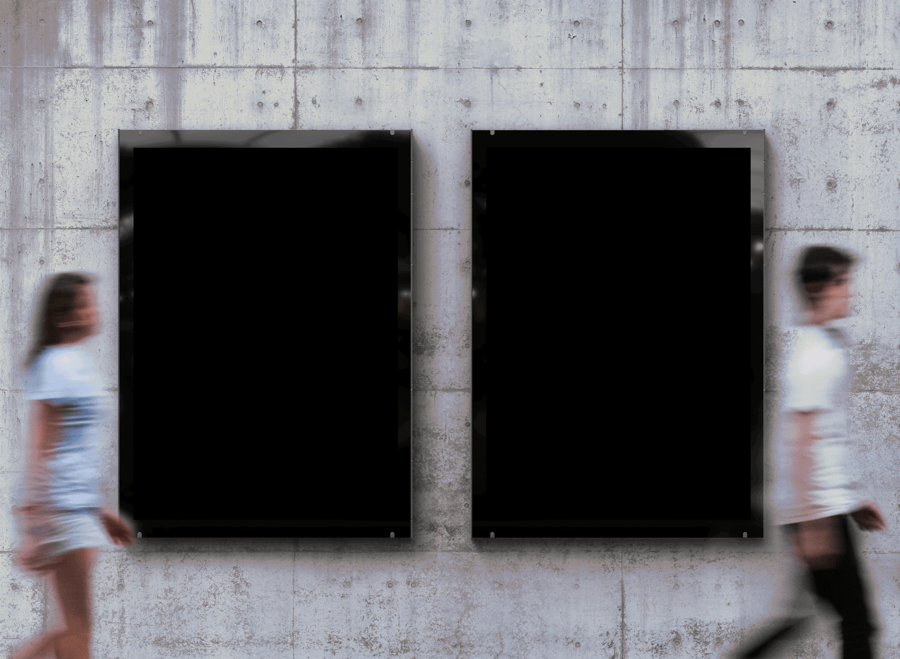

Can two lines fall in love if they are destined never to touch?
Destiny: Where Geometry Meets its Fate
I designed Destiny, a decorative typeface born from a precise grid system of a single square and two circles. Inspired by the delicate, organic reaching of cherry blossom branches, I crafted a visual language that balances thin, airy lines with geometric rigor.
The core of the system lies in its two parallel circular lines that share a quarter-circle path, maintaining a constant, haunting distance. This structural constraint is exactly why I named it Destiny: in this typographic world, these two lines are forever bound together, yet destined never to meet. It is a typeface defined by elegant proximity and inevitable separation.







